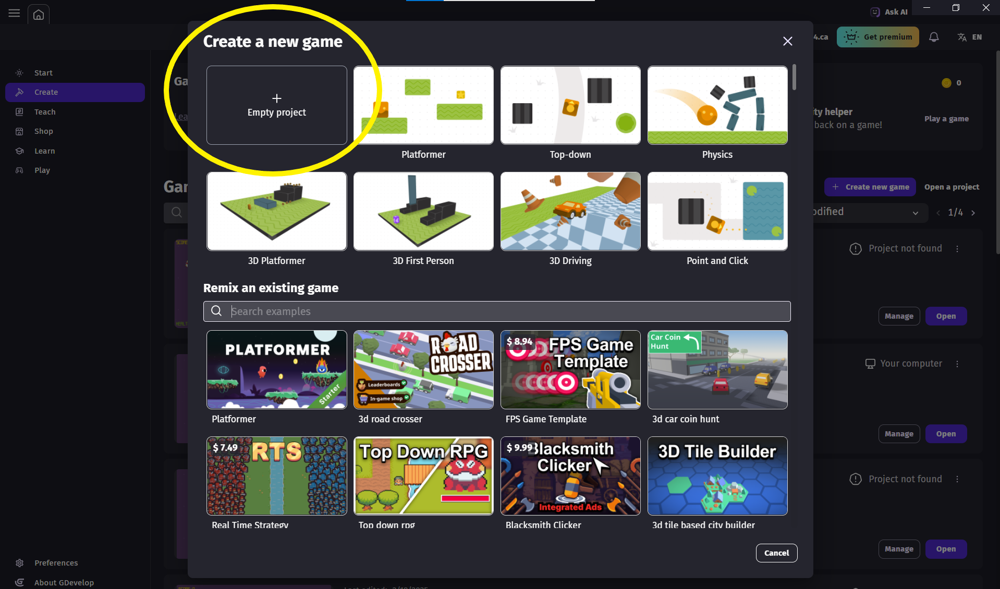

Welcome to the Platform Game Tutorial!
In this guided walkthrough you’ll use GDevelop to build a simple, working platformer while learning the core skills you’ll need for your own game. We’ll start small—setting the world bounds and adding solid platforms—then bring in a player with movement and gravity, add hazards and collectibles, and finish with a basic multi-screen flow. To keep things smooth, we’ll begin on a single layer (using Z-order to stack objects) and lock background pieces so they don’t shift by accident; camera setup comes after the player is moving. By the end, you’ll have a clean starter project with collisions, checkpoints, and level transitions that you can customize and expand into your own customized game.
Let's get started
1. Folder Setup
- Create a
U2 Game Development<> folder in yourICT 9<> on yourH:\<> drive. - In your
U2 Game Development<> folder, create another folder calledassets<> - Download the Kenney Abstract Platformer and extract the files to your
assets<> folder. - Click the Folder Download Link in the Resources section (right sidebar).
- On the site, click the Download button.
- Choose Save as → save to
H:\ICT 9\2. Game Development\assets<>. - Open File Explorer and go to that folder.
- Right-click the zip → Extract All… → confirm destination → Extract.
- A new folder appears (e.g.,
kenney_abstract-platformer<>).
How to download & unzip
Step 1 – Download
Step 2 – Extract
2. Setting Up Your Game
-
Create the project. In GDevelop choose
Create → Create New Game → and select Empty Project

- Name your project
Platform Game Tutorial - Your Name<> - Save your game to your
U2 Game Development<> folder on yourH:\<> drive. - Go into the Project Manager menu and rename your scene to Level 1. Close the menu
What is a scene?
A scene is a self-contained screen or level. It contains your objects, layers, and events that run together. The camera shows a window (viewport) into the scene, which can be larger than the screen. Use different scenes for menus and levels.
In a game, you may have several scenes, so it is good to have them named appropriately.
3. Adding a Background
Now we are going to add a background to our scene. It will be on the Base Layer of our game.

- Click on the
Add new object<> button and selectTiled Sprite<>
- Name the sprite
Background<> and press the button toChoose folder<> and select Files from your device. Navigate to the following folder ICT 9 → 2 Game Development → PNG → Backgrounds and select theset1_tile.png<>. Change theDefault width<> andheight<> to64 Changing the view in File Manager
- If you cannot see the icons for your files, press the view button in the bar and select
Large Icons<>. This will help you select the images you want.
- If you cannot see the icons for your files, press the view button in the bar and select
- Drag and drop it to your scene layout. Click on it again and make it bigger.

- The
Tiled Sprite Properties<> menu should pop up on your left side. Enter the following : X : 0 → Y : 0 → Z : 1 → W : 6400 → H : 3600. (If you cannot adjust the H, press the paperclip to the side).
- You should see your bacground fill with the image - repeated seamlessly across the space.
- (Optional) Change the background colour to white, to make it easier to see.
- Save your work
4. Locking the background
Now that we have a background, we need to lock it in place, so that it doesn't get moved or accidently deleted.
- Click on the
Open Instance Panel<>button to reveal the panel at the bottom. - Click on the
Lock<> icon in theBackground<> to lock the background. - You can close the panel by pressing the
X<> - Save your work

All Set Up!
Great! We have set up some of the backend work for our project and created a background. If you press the
Next we will create some platforms on a new layer for our game.Preview<> button, you should see a window with what your background will look like when you are playing your game.